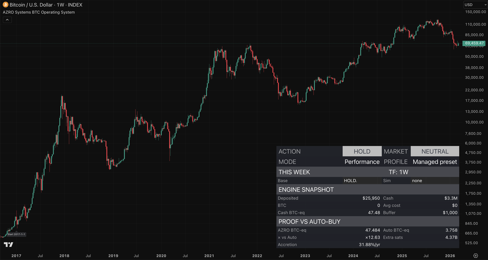

Problem
Noise is where portfolios leak.
Lower-timeframe trading, random altcoins, fees, and emotional decisions turn good intentions into long-term portfolio bleed.
Most people do not need more trading. They need a better way to handle the few decisions that matter. AZRO gives you a thoroughly developed, tested, and maintained TradingView framework for clear weekly BTC accumulation, optional trim logic, published proof on chart, and readable weekly-close XRP alerts around major cycle turns — so the cycle can end with stronger reserves, not more chart time.
Runs inside TradingView, so the framework stays on the charting platform many serious traders and investors already use.
BTC Operating System • XRP cycle alerts • No-card trial

Most portfolios leak more through noise, fees, and emotional decisions than they gain through extra activity.
Lower-timeframe trading, random altcoins, fees, and emotional decisions turn good intentions into long-term portfolio bleed.
Most people do not need more trades. They need fewer bad decisions, less noise, and a process they can still follow when the market gets loud.
Stay out of lower-timeframe chaos, stop funding random bets, and finish the cycle with more of the asset you actually want to own.
No paid TradingView plan required. No automation. Clear weekly outputs you control.
Both workflows live inside TradingView, so the process stays on the charting platform many traders and investors already use.
No exchange connection, no auto-execution, and no copy-trading room. You read the weekly output and stay in control of every decision.
Most people either overtrade, wait too long, or buy mechanically without context. AZRO keeps score against a matched auto-buy baseline so the framework has to earn its place.
The workflows are thoroughly developed, tested, documented, and maintained through every cycle so you are not left reinventing the process alone.
One reserve asset. One cycle amplifier. One stronger end-state.
The BTC Operating System is designed to help you accumulate Bitcoin with clear weekly guidance, optional trim logic, and proof on chart against a matched auto-buy baseline.
The XRP Top/Bottom Indicator gives you readable weekly-close alerts around major bottoms, tops, and risk windows without dragging you into lower-timeframe noise.
When major XRP moves are handled well, realized wins can strengthen long-term BTC or reserve capital for future major XRP reloads instead of disappearing into random stocks, altcoins, or guesswork.
Educational workflows only. Always size positions and manage risk for your own situation.
Published handbooks, validation, and on-chart accountability let the framework earn its place.
The handbook compares AZRO BTC-eq with a matched weekly auto-buy baseline using the same modeled cashflows and buffer rules.
The handbook publishes alert coverage, forward outcomes, and completed-cycle behavior on the canonical 1W XRP chart.
Historical / hypothetical and implementation-sensitive. See the documentation packs and handbooks for scope, assumptions, and limitations.
Two invite-only indicators. One serious accumulation framework for the full cycle.
AZRO is built around one idea: protect stored time and energy with better ownership, better process, and stronger capital behavior through the cycle.
Read why Bitcoin is the foundation, why XRP is the amplifier, and why a durable framework beats random trading, chaos tax, and guesswork.
Start with BTC if disciplined accumulation is the goal. Add XRP when you want readable alerts for the bigger cycle. Use both when you want the full framework.
Best place to start for most people. Use the BTC Operating System when your main goal is accumulating more long-term Bitcoin with a calmer, more disciplined weekly process.
Use the XRP Top/Bottom Indicator when you want readable weekly-close alerts for major XRP bottoms, tops, and risk windows without constant chart watching.
Accumulate BTC steadily, use XRP for major cycle moves, and let realized wins strengthen long-term BTC or reserve capital for future major XRP reloads.
Bitcoin should remain the majority of crypto capital. See the philosophy page for the sizing framework.